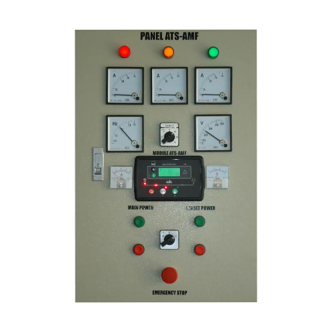
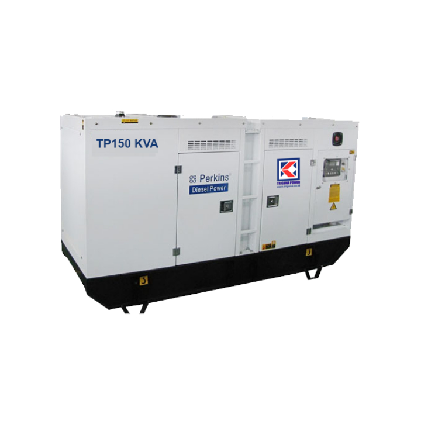

<!DOCTYPE html>
<html>
<title>Telkom Sukabumi</title>
<meta charset="UTF-8">
<meta name="viewport" content="width=device-width, initial-scale=1">
<link rel="stylesheet" href="https://fonts.googleapis.com/css?family=Roboto">
<link rel="stylesheet" href="css/Telkom.css">
<style>
body {font-family: 'Roboto';}
h1, h2, h3, h4, h5, h6 {
  font-family: 'Roboto';
  letter-spacing: 5px;
}
.mySlides {display:none;}

</style>
<body>
</body>
</html>

<!-- Navbar (sit on top) -->
<div class="top">
  <div class=" white w3-padding w3-card" style="letter: spacing 30px;">
    
    <b>Network Witel Sukabumi</b></i>
    <!-- Right-sided navbar links. Hide them on small screens -->
    <div class="w3-right w3-hide-small">
      <a href="Telkom.html" class="w3-bar-item w3-button">Beranda</a>
      <a href="Perangkat.html" class="w3-bar-item w3-button">Perangkat</a>
      <a href="Portaldownload.html" class="w3-bar-item w3-button">Download</a>
    </div>
  </div>
</div>

<!-- Header -->
<header class="w3-display-container w3-content w3-wide" style="max-width:1600px;min-width:500px" id="home">
  
  <div class="w3-display-bottomleft w3-padding-large w3-opacity">
    <h1 class="w3-xxlarge">Unit Network Witel Sukabumi</h1>
  </div>
</header>

<!-- Page content -->
<div class="w3-content" style="max-width:1400px">

    <!-- About Section -->
    <div class="w3-row w3-padding-64" id="about">
      <div class="w3-col m6 w3-padding-large w3-hide-medium">
       
      </div>
      <div class="w3-col m6 w4-padding-large">
        <h1 class="w3-center">Telkom</h1><br>
        <p class="w3-large">PT Telekomunikasi Indonesia (Persero) Tbk, biasa disebut Telkom Indonesia atau Telkom saja (IDX: TLKM, NYSE: TLK) adalah perusahaan informasi dan komunikasi serta penyedia jasa dan jaringan telekomunikasi secara lengkap di Indonesia. Telkom mengklaim sebagai perusahaan telekomunikasi terbesar di Indonesia, dengan jumlah pelanggan telepon tetap sebanyak 15 juta dan pelanggan telepon seluler sebanyak 104 juta.</p>
        <p class="w3-large w3-text-black w3-hide-medium">  Telkom merupakan salah satu BUMN yang 52,09% sahamnya saat ini dimiliki oleh Pemerintah Indonesia, dan 47,91% dimiliki oleh publik. Telkom juga menjadi pemegang saham mayoritas di 13 anak perusahaan, seperti PT Telekomunikasi Seluler (Telkomsel), Telkom Akses, Telkom Metra[4], PT PINS Indonesia</p>
      </div>
    </div>
    
    <hr>
    <!-- About Section -->
    <div class="w3-row w3-padding-64" id="about">
        <div class="w3-col m6 w3-padding-large w3-hide-small">
         
        </div>
    
        <div class="w3-col m6 w4-padding-medium">
          <h1 class="w3-center">Struktur Organisasi Telkom</h1><br>
          <ul>
            <li>
              <p class="w3-large">Striker, bertugas untuk bertemu dengan customer. Contoh: Unit CS (Consumer Service) melakukan revenue. Unit CC (Customer Care) melayani customer yang mengalami gangguan.</p>
            </li>
            <li>
              <p class="w3-large">Defender, bertugas dalam pemenuhan kebutuhan perusahaan. Contoh: Unit Logistik & GSD menyiapkan peralatan yang dibutuhkan. Unit War Room melakukan pengolahan data sebagai gambaran posisi perusahaan. Unit HR & CDC (Human Resource & Community Development Center) menyiapkan SDM (Sumber Daya Manusia), dan kesehatan.</p>
            </li>
          <li>
              <p class="w3-large">Midfielder, bertugas untuk mengsupport operasional. Contoh: Unit CCAN & WAN (Corporate Customer Access Network & Wide Area Network) bekerja untuk wholesale (layanan besar). Unit ASO (Access Service Operation) mengsupport operasi layanan akses. Unit Access Optima penyedia infrastruktur pembangunan jaringan. Unit Telkom Access bekerja dalam lapangan (teknisi) untuk pemasangan Indihome. </p>
            </li>
          </ul>
          <p class="w3-large w3-text-grey w3-hide-medium"></p>
        </div>
      </div>
      <hr>
  <!-- End page content -->
  <!-- Container (Portfolio Section) -->
<div class="w3-content w3-container w3-padding-64" id="portfolio">
    <h3 class="w3-center">Perangkat</h3>
    <!-- Responsive Grid. Four columns on tablets, laptops and desktops. Will stack on mobile devices/small screens (100% width) -->
    <div class="w3-row-padding w3-center">
      <div class="w3-col m3">
        
      </div>
  
      <div class="w3-col m3">
        
      </div>
  
      <div class="w3-col m3">
        
      </div>

      <div class="w3-col m3">
        
      </div>
    <div class="w3-row-padding w3-center w3-section">
  </div>
  
  <!-- Modal for full size images on click-->
  <div id="modal01" class="w3-modal w3-black" onclick="this.style.display='none'">
    <span class="w3-button w3-large w3-black w3-display-topright" title="Close Modal Image"><i class="fa fa-remove"></i></span>
    <div class="w3-modal-content w3-animate-zoom w3-center w3-transparent w3-padding-64">
      
      <p id="caption" class="w3-opacity w3-large"></p>
    </div>
  </div>
  
  <!-- Footer -->
  <footer class="w3-center w3-light-grey ">
    <footer class="page-footer w3-light-grey">
        <div class="container">
        <div class="row">
        <div class="col s3 white-text">
        </div>
        </div>
        </div>
        <div class="footer-copyright">
            <div class="container">
                &copy; 2019 Made By Syarifa Nabilla SMK> Muhammadiyah 1 Kota Sukabumi
            </div>
        </div>
    </footer>
  </body>
  </html>
  